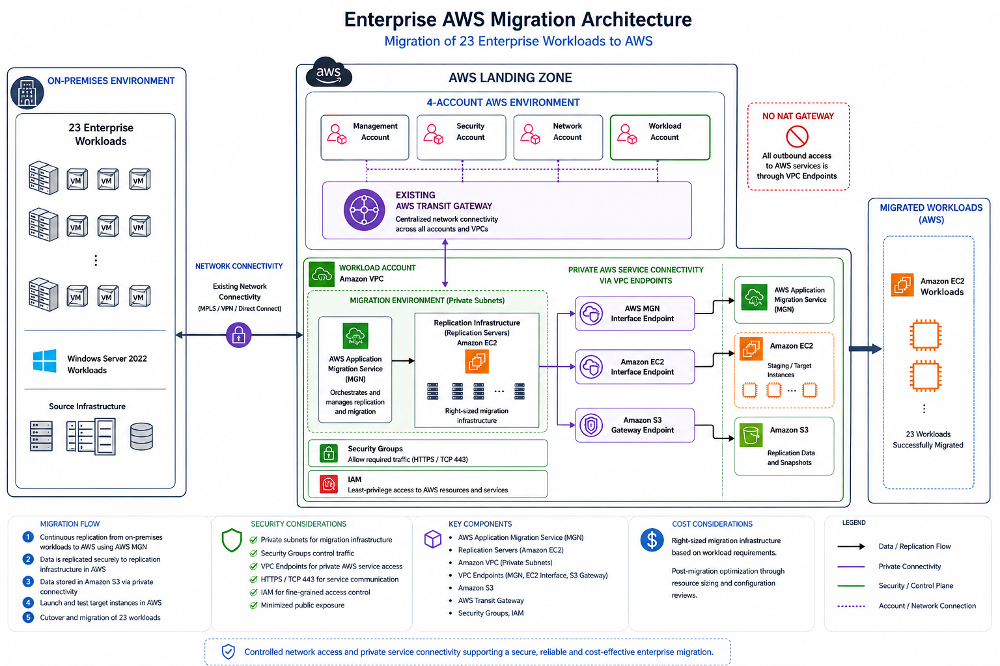

Project Overview
Supported the migration of 23 enterprise workloads from an on-premises environment to AWS. The engagement involved workload assessment, migration planning, AWS infrastructure, networking, replication, connectivity, troubleshooting and post-migration stabilization.
The target environment was established within an AWS multi-account Landing Zone consisting of four AWS accounts, with centralized networking and connectivity considerations incorporated into the migration architecture.
Business Challenge
The organization needed to transition its existing enterprise workloads from on-premises infrastructure to AWS while maintaining operational continuity, secure connectivity and reliable communication between migration components and AWS services.
The migration also required the team to work within the constraints of the existing enterprise network and AWS environment while minimizing unnecessary public exposure and controlling infrastructure costs.
My Role
I contributed to the technical planning, implementation, troubleshooting and stabilization of the migration environment.
- Supported workload assessment and migration planning for 23 enterprise workloads.
- Contributed to AWS infrastructure and network design within the existing multi-account Landing Zone.
- Supported the configuration and operation of AWS Application Migration Service (MGN) for workload replication.
- Configured and troubleshot connectivity between the migration infrastructure and AWS services.
- Investigated migration failures and infrastructure issues and worked through alternative approaches to maintain migration progress.
- Supported post-migration stabilization, infrastructure troubleshooting and resource optimization.
Existing Environment
The workloads originated from an on-premises environment that included Windows Server 2022 infrastructure. The migration environment had to support reliable communication between the on-premises infrastructure, replication components and AWS.
The target AWS environment was organized using a four-account Landing Zone and an existing Transit Gateway for centralized network connectivity.
Architecture Approach
AWS Application Migration Service (MGN) was used to support continuous replication of the source workloads into AWS. Replication infrastructure was deployed in AWS and configured to communicate with the required AWS services through the appropriate network paths.
Because the migration environment did not use a NAT Gateway, private connectivity to required AWS services was established using VPC endpoints.
- MGN interface endpoint for private communication with AWS Application Migration Service.
- EC2 interface endpoint for private EC2 API communication.
- S3 Gateway Endpoint for private access to Amazon S3.
- Security Groups configured to control required HTTPS traffic to interface endpoints.
This approach allowed the migration infrastructure to communicate with required AWS services without introducing unnecessary public network exposure.

Migration Process
- Assessed the source workloads and migration requirements.
- Reviewed the target AWS environment and existing network architecture.
- Prepared the AWS migration infrastructure and required connectivity.
- Installed and configured replication components for workload replication.
- Monitored replication and investigated connectivity or infrastructure issues.
- Performed migration activities and supported workload stabilization after migration.
- Reviewed infrastructure sizing and configuration as part of post-migration optimization.
Technical Challenges & Solutions
1. Private Connectivity Without NAT Gateway
The VPC did not have a NAT Gateway, so the migration infrastructure could not rely on NAT for communication with AWS services.
I supported the configuration and troubleshooting of VPC endpoints to provide private connectivity to the AWS services required by the migration environment.
This included an MGN interface endpoint, EC2 interface endpoint and an S3 Gateway Endpoint, with security group rules allowing the required HTTPS traffic.
2. Data Transfer Approach
An initial approach involving DataSync and S3 encountered a mounting-related issue that prevented the expected data transfer workflow from operating correctly.
Rather than allowing the issue to block the migration activities, the approach was reassessed and AWS CLI was used as an alternative method for transferring the required data to Amazon S3.
3. Replication Infrastructure Sizing
During the migration, replication infrastructure sizing was reviewed based on the requirements of the workload replication process.
The replication server was initially deployed using a smaller instance size and was subsequently increased to provide additional compute capacity as required by the migration workload.
4. Migration Troubleshooting
Migration activities required investigation of networking, endpoint, security group and infrastructure configuration issues affecting communication between the migration components and AWS services.
Troubleshooting involved isolating the affected component, validating connectivity and configuration, applying targeted changes and verifying the result before proceeding with the migration.
Security Considerations
- Private connectivity to required AWS services through VPC endpoints.
- Network segmentation using VPC subnets.
- Security Groups used to control required network traffic to migration infrastructure and interface endpoints.
- HTTPS communication over TCP 443 for applicable AWS service connectivity.
- IAM-based access control for AWS resources and services.
- Minimized unnecessary public exposure of migration infrastructure.
Cost Considerations
Cost was considered throughout the migration and stabilization process. Infrastructure sizing was reviewed against workload requirements to avoid unnecessary resource expenditure while maintaining sufficient capacity for migration activities.
Post-migration optimization also included reviewing AWS resources and configurations to identify opportunities for improved cost efficiency.
Outcome
Supported the successful migration of 23 enterprise workloads to AWS and contributed to the stabilization and optimization of the resulting cloud environment.
The project demonstrated practical experience across enterprise migration planning, AWS infrastructure, networking, private service connectivity, workload replication, troubleshooting, security and cloud cost optimization.
Key Technologies
- AWS Application Migration Service (MGN)
- Amazon EC2
- Amazon VPC
- Amazon S3
- VPC Endpoints
- Transit Gateway
- AWS Systems Manager
- AWS IAM
- Security Groups
- Amazon CloudWatch
- AWS CLI
What This Project Demonstrates
- Enterprise AWS migration
- Cloud architecture and infrastructure
- AWS networking and private connectivity
- Multi-account AWS environments
- Migration planning and workload replication
- Infrastructure troubleshooting
- Cloud security considerations
- Cloud cost optimization
- Technical problem solving
- Customer and stakeholder collaboration